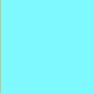

Text
The main body of the text or paragraphs will be the color of hex code #000000 or black. Example image:
Headings
Each main heading needs to stand out away from the background
and the body of the paragraphs themselves, thus the choosen color for that
is hex code #0095b6 or a dark blue. For the smaller sub-headings a nice blue
or hex code #0892d0 will do nicely.
Example images below...
For dark blue:
For a light blue:

Navigation
Next for the navigation links a nice sky blue or #7df9ff as the hex code goes.
Background
Finally as the color of text is shown, the final is the color of the background to
contrast them against. Find that in hex code #c6c386 or a light tan.
Example below: